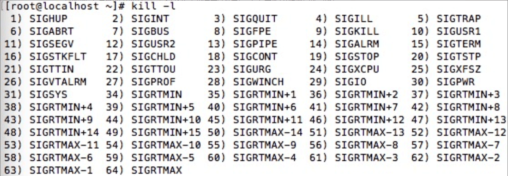
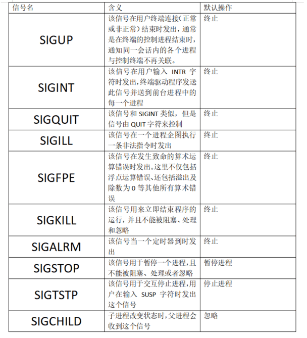
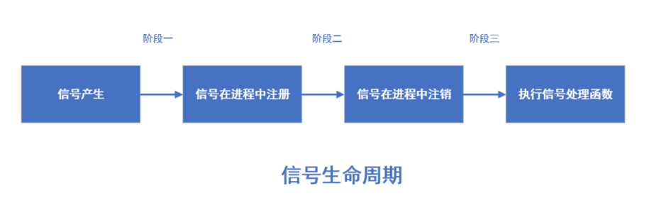
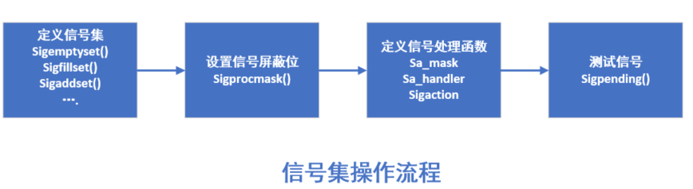

概述：知识点
- Linux 信号概述
- Linux 信号通信原理
- Linux 信号相关 API 函数介绍
0x01 Linux信号概述
信号机制是一种使用信号来进行进程之间传递消息的方法，信号的全称为软中断信号，简称软中断。关于 Linux 信号的特点可以概括如下几点：
- 信号是在软件层次上对中断机制的一种模拟。在原理上，一个进程收到一个信号与处理器收到一个中断请求可以说是一样的。
- 信号是异步的，一个进程不必通过任何操作来等待信号的到达，事实上进程也不知道信号到底什么时候到达。
- 信号可以直接进行用户空间进程和内核进程之间的交互，内核进程也可以利用它来通知用户空间进程发生了哪些系统事件。它可以在任何时候发给某一个进程，而无需知道该进程的状态。如果该信号当前并未处于执行态(Running),则该信号由内核保存起来，直到该进程恢复执行再传递给它为止。如果一个信号被进程设置为阻塞，则该信号的传递被延迟，直到其阻塞被取消时才被传递给进程。
- 信号是进程间通信机制中唯一的异步通信机制，可以看作是异步通知，通知接收信号的进程有哪些事件发生了。信号机制除了基本通知外，还可以传递附加信息。
在 Linux 系统内核头文件 signal.h 中定义有 64 种信号，这些信号都是以 SIG 开头，且都被定义为正整数。除了通过查看 signal.h 头文件能够看到信号的名字和定义外，还可以在 Linux 系统下使用命令 kill -l 来查看信号的名字以及序号，信号都是从 1 开始编号的，不存子 0 号信号。具体如下图所示(由于实验环境采用虚拟容器，所以执行 kill -l 并不会有结果显示)：

)0x02 Linux信号通信原理
要搞清楚信号通信的原理，就需要搞清楚信号的产生、传输以及响应。
信号时间产生其实就是信号的来源，对于 Linux 操作系统来说信号的主要来源可以归纳为以下两点：
- 硬件来源。如我们按下了键盘上的按钮 或者出现其他硬件故障；
- 软件来源。最常用发送信号的系统函数有 kill()、raise()、alarm()、setitimer() 和 sigqueue()等，软件来源还包括一些非法运算等操作。
而对于信号在产生之后，Linux 对每个信号都有一个缺省的动作，典型的缺省动作就是终止进程，当这个信号的进程收到信号后会根据这个信号的具体情况提供以下三种不同的处理方式：
- 忽略信号。忽略信号即对信号不做处理，其中，有两个信号不能忽略：
SIGKILL和SIGSTOP。 - 捕捉信号。定义信号处理函数，当信号发生时，执行响应的处理函数。
- 执行默认操作。Linux 对每种信号都规定了默认操作。
对应部分系统定义的信号，Linux 系统都规定了一些默认操作作为信号的响应处理，如下图所示：

)一个完整的信号生命周期可以分为 3 个重要阶段，这 3 个阶段由 4 个重要事件来刻画的；信号产生、信号在进程中注册、信号在进程中注销、执行信号处理函数。这里信号的产生、注册、注销等是指信号的内部实现机制，而不是信号的函数实现(不受我们的掌控)。因此信号注册与否与后面讲到的发送信号函数（如 kill() 等）及信号安装函数（如 signal() 等）无关，只与信号值有关。
相邻两个事件的时间间隔构成信号生命周期的一个阶段，如下图.注意这里的信号处理有多种方式，一般是由内核完成的，当然也可以由用户进程来完成。如下图所示：

)信号的处理包括信号的发送、捕捉和处理，它们有各自相对应的常见函数：
- 发生信号的函数:
kill()、raise() - 捕捉信号的函数:
alarm()、pause() - 处理信号的函数:
signal()、sigaction()
0x03 Linux 信号相关 API 函数介绍
前面其实已经提到了很多 Linux 信号机制相关的函数。下面就分别镜像讲解和介绍。
kill() 函数同咱们的 kill 系统命令一样（但不能真的认为 kill() 就是 kill），可以发送信号给进程或进程组（实际上，kill 系统命令只是 kill() 函数的一个用户接口）。这里需要注意的是，kill() 函数不仅可以终止进程（实际上是通过发出 SIGKILL 信号终止），也可以向进程发送其他信号。具体描述如下：
#include <signal.h>
#include <sys/types.h>
int kill(pid_t pid, int sig);
/*
参数：
- pid：要发送信号的进程号
0 信号被发送给所有和当前进程在同一进程组的进程号
-1 信号发给所有的进程表中的进程（除了进程号最大的进程之外）
<-1 信号发送给进程组好为 -pid 的每一个进程
- sig：信号
返回值
成功：0 失败：-1
*/与 kill() 函数不同的是，raise() 函数允许进程向自身发送信号。具体描述如下：
#include <signal.h>
#include <sys/types.h>
int raise(int sig);
/*
参数
- sig：信号
返回值
成功：0 失败：-1
*/除了上面的信号发送函数，Linux 还定义了两个信号捕捉函数用来接收信号 alarm() 和 pause() 。
alarm() 也称为闹钟函数，它可以在进程中设置一个定时器，当定时器指定的时间到时，它就向进程发送 SIGALARM 信号。要注意的是，一个进程只能有一个闹钟时间，如果在调用 alarm() 之前已设置过闹钟时间，则任何以前的闹钟时间都被新值所代替。具体描述如下：
#include <unistd.h>
unsigned int alarm(unsigned int seconds)
/*
参数
seconds：指定秒数，系统经过 seconds 后会向该进程发送 SIGALRM 信号
返回值
成功：如果调用此 alarm() 前已经设置好闹钟时间，则返回上一个闹钟剩余时间，否则返回 0
失败：-1
*/pause() 函数用于将调用进程挂起直至捕捉到信号为止。这个函数很常用，通常可以用于判断信号是否已到。具体描述如下：
#include <unistd.h>
int pause(void)
/*
返回值
出错返回 -1，并设置 errno
*/Linux 信号处理的方法主要有以下两种：
- 使用
signal()函数 - 使用信号集函数组
使用 signal() 函数处理时，只需指出要处理的信号和处理函数即可。它主要用于前 32 种非实时信号的处理，不支持信号传递信息。Linux 还支持一个更健壮更新的信号处理函数呢，它就是 sigaction()，Unix 环境编程等书籍其实都是推荐使用这个函数。具体函数介绍如下：
#include <signal.h>
typedef void (*sighandler_t)(int);
sighandle_t signal(int signum, sighandler_t handler);
/*
参数：
signum：指定信号代码
handler：SIG_IGN - 忽略该信号
SIG_DFL - 采用系统默认方式处理信号
自定义的信号处理函数指针
返回值：
成功：之前的信号处理配置 失败；-1
*/
#include <signal.h>
struct sigaction{
void (*sa_handler)(int signo); //函数指针，指定信号处理函数，可以是 SIG_DFL（默认处理方式）和 SIG_IGN（忽略信号）
sigset_t sa_mask; //信号集，指定在处理中屏蔽哪些信号
int sa_flags; //信号标志位，包含对信号处理的各个选择项
void (*sa_restore)(void);
};
int sigaction(int signum, const struct sigaction *act, struct sigaction *oldact);
/*
参数：
signum 信号代码，可以是除了 SIGKILL SIGSTOP 之外的任何一个特定有效的信号
act 执行结构体 sigaction 的一个实例指针，指定对特定信号的处理
oldact 保存原来对相应信号的处理
返回值：
成功：0 失败：-1
*/使用信号集函数组处理信号时设计一系列的函数，这些函数按照先后的调用次序可分为以下几大模块：创建信号集、注册信号处理函数及检测信号。
其中，创建信号集主要用于处理用户感兴趣的一些信号，其函数包括以下几个：
sigemptyset(): 将信号集初始化为空sigfillset(): 将信号集初始化为包含所有已定义的信号集sigaddset(): 将指定信号加入到信号集中sigdelset(): 将指定信号从信号集中删除sigismember(): 查询指定信号是否在信号集中
注册信号处理函数主要用于决定进程如何处理信号。这里要注意的是，信号集里的信号并不是真正可以处理的信号，只有当信号的状态处于非阻塞状态时才会真正起作用。因此，首先使用 sigprocmask() 函数检测并更改信号屏蔽字（信号屏蔽字是用来指定当前被阻塞的一组信号，它们不会被进程接收），然后使用 sigaction() 函数来定义进程接收到特定信号后的行为。
检测信号是信号处理的后续步骤，因为被阻塞的信号不会传递给进程，所以这些信号就处于“未处理”状态（也就是进程不清除它的存在）。sigaction() 函数允许进程检测“未处理”信号，并进一步决定对它们做何处理。
具体描述如下：
#include <signal.h>
int sigemptyset(sigset_t *set);
int sigfillset(sigset_t *set);
int sigaddset(sigset_t *set, int signum);
int sigdelset(sigset_t *set, int signum);
int sigismember(sigset_t *set, int signum);
/*
参数：
set：信号集
signum：信号代码
返回值：
成功：0 失败：-1
*/在 sigprocmask() 中，若 set 是一个非空指针，则参数 how 表示函数的操作方式；若 how 为空，则表示忽略此操作。
#include <signal.h>
int sigprocmask(int how, const sigset_t *set, sigset_t *oset);
/*
参数：
how：
SIG_BLOCK 增加一个信号集到当前进程的阻塞集中
SIG_UNBLOCK 从当前的阻塞集中删除一个信号集
SIG_SETMASK 将当前的信号集设置为信号阻塞集
set：指定信号集
oset：信号屏蔽字
返回值：
成功：0 失败：-1
*/
#include <signal.h>
int sigpending(sigset_t *set);
/*
参数：
set：要检测的信号集
返回值：
成功：0 失败：-1
*/处理信号总是遵循下图所示的过程：

)